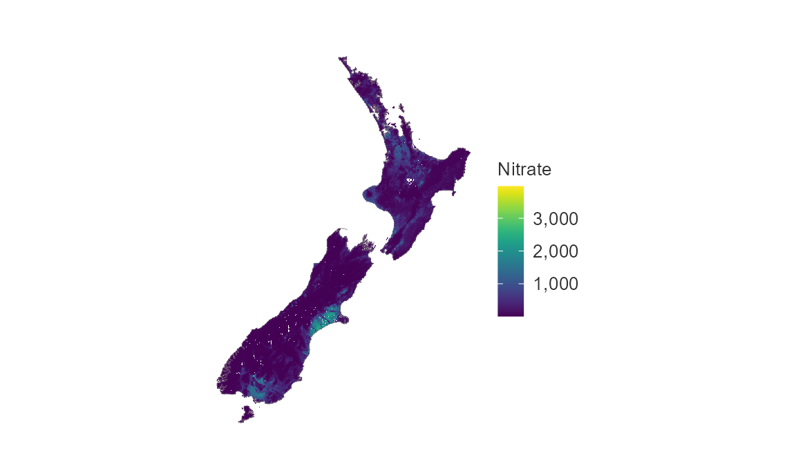

library(dplyr)
library(simplevis)
library(palmerpenguins)
library(ggplot2)
library(patchwork)
set.seed(123456789)Purpose
simplevis is a package of ggplot2 and leaflet wrapper functions that aims to make visualisation easier with less brainpower required.


4 functions per family: colouring, facetting, neither or both
Each visualisation family generally has four functions.
This is based on whether or not a visualisation is to be:
-
not coloured by a variable and not facetted (
*()) - coloured by a variable, but not facetted (
*_col())
- facetted, but not coloured by a variable (
*_facet()) - coloured by a variable and facetted (
*_col_facet())
In simplevis, ggplot2 concepts of col and fill aesthetics have been unified into one for simplicity.
The premise is that these 4 types of visualisation are most common for each visualisation family, and therefore it is useful to make functions that quickly enable these.
All arguments for variables are required unquoted, and follow an *_var format (i.e. x_var, y_var, col_var and facet_var)
For example, code below shows these combinations with code and output for the gg_point*() family.
gg_point(penguins,
x_var = bill_length_mm,
y_var = body_mass_g)
gg_point_col(penguins,
x_var = bill_length_mm,
y_var = body_mass_g,
col_var = sex)
gg_point_facet(penguins,
x_var = bill_length_mm,
y_var = body_mass_g,
facet_var = species)
gg_point_col_facet(penguins,
x_var = bill_length_mm,
y_var = body_mass_g,
col_var = sex,
facet_var = species)
Minimal code and effort
simplevis works with the pipe.
The order of variables in functions is always x_var, y_var, col_var and facet_var as appliable.
So, once familiar with the package, you may choose not to name the arguments of x_var, y_var, col_var and facet_var.
Other variables should always be named.
This can enable great looking plots with minimal code and effort.
penguins %>%
gg_point_col_facet(bill_length_mm, body_mass_g, sex, species)
Palettes
For all functions, change the colour palette by supplying a vector of hex code colours to the pal argument.
gg_point(penguins,
x_var = bill_length_mm,
y_var = body_mass_g,
pal = "#da3490")
This method is the same for when you are colouring by a variable, or just colouring all of the geometry in the visualisation a single colour.
gg_point_col(penguins,
x_var = bill_length_mm,
y_var = body_mass_g,
col_var = species,
pal = c("#da3490", "#9089fa", "#47e26f"))
Refer to the colour article for further information.
Customising with consistent prefixes & autocomplete
There are lots of arguments available to modify the defaults.
In general, arguments have consistent prefixes based on x_*, y_*, col_* or facet_*.
This helps you identify and explore what you need by using the Rstudio autocomplete.
Some common arguments are:
-
*_titleto adjust the titles for any x, y or col scale -
*_labelsto adjust labels for any x, y, col or facet scale
-
*_na_rmto remove NA observations in the x, y, col or facet scale -
*_zeroto start at zero for numeric x or y scales -
*_breaks_nthe number of numeric bins of breaks for numeric x, y or col scales to aim for -
*_revto reverse the order of categorical x, y, col or facet scales -
*_expandto add padding to an x or y scale -
*_balanceto balance a numeric scale around zero, so that zero is in the centre -
col_legend_noneto turn the legend off.
Below illustrates how to customise titles and control labels through all possible ways.
plot_data <- storms %>%
group_by(year, status) %>%
summarise(wind = mean(wind))
col_labels <- c("Hcane", "TDep", "TSt")
names(col_labels) <- sort(unique(plot_data$status))
col_labels
#> hurricane tropical depression tropical storm
#> "Hcane" "TDep" "TSt"
gg_line_col_facet(plot_data,
x_var = year,
y_var = wind,
col_var = status,
facet_var = status,
title = "US storms storm wind speed, 1975-2020",
x_title = "Storm year",
y_title = "Average storm wind speed",
col_title = "Storm status",
x_labels = function(x) stringr::str_sub(x, 3, 4),
y_labels = scales::label_comma(accuracy = 0.1),
col_labels = col_labels,
facet_labels = ~ stringr::str_to_sentence(stringr::str_wrap(.x, 5)),
y_zero = TRUE,
y_breaks_n = 6,
y_expand = ggplot2::expansion(add = c(0, 10)),
size_point = 1)
Refer to the scales article for further information.
The size_ and alpha_ prefixes are used to modify the size and opacity of various aspects of the visualisation.
Themes
You can adjust the theme of any simplevis plot by providing a ggplot2 theme object to the theme argument. You can also create your own quick themes with the simplevis gg_theme() function.
custom_theme <- gg_theme(
pal_body = "white",
pal_title = "white",
pal_subtitle = "white",
pal_background = c("#232323", "black"),
pal_gridlines = "black",
gridlines_h = TRUE,
gridlines_v = TRUE)
gg_point_col(penguins,
species,
x_var = bill_length_mm,
y_var = body_mass_g,
theme = custom_theme)
Refer to the themes article for further information.
Maps
simplevis also supports sf and stars maps. sf refers to point, line or polygon features, whereas stars refers to arrays (i.e. grids).
For gg_sf*() functions, data must be an sf object and of POINT/MULTIPOINT, LINESTRING/MULTILINESTRING, or POLYGON/MULTIPOLYGON geometry type.
For gg_stars*() functions, data must be a stars object.
For both gg_sf*() and gg_stars*() functions:
- Data must have a coordinate reference system (CRS) defined
- No
x_varandy_varvariables are required - Borders can added to maps by providing an
sfobject to thebordersargument.
The following example objects are provided withing the package for learning purposes: example_point, example_polygon and example_stars.
The borders argument allows for the user to provide an sf object as context to the map (e.g. a coastline or administrative boundaries).
gg_sf_col(example_point,
col_var = trend_category,
borders = example_borders)
gg_stars_col(example_stars,
col_var = nitrate,
col_na_rm = TRUE,
borders = example_borders)
simplevis also provides leaflet wrapper functions for sf and stars objects. These functions work in a similar way, but have a leaf_ prefix. Note there is no borders argument available in the leaf_*() functions.
leaf_sf_col(example_point,
col_var = trend_category)Refer to the leaflet article for further information.
Extending simplevis
All gg_* and leaf_* wrapper functions produce ggplot or leaflet objects. This means layers can be added to the functions in the same way you would a ggplot2 or leaflet object. Note you need to add all aesthetics to any additional geom_* layers.
The below example adds error bars, labels, and a new y scale. Note that 25 percentiles and 75 percentiles have been used to demonstrate the errorbars, rather than confidence intervals which would normally be used with error bars.
plot_data <- penguins %>%
filter(!is.na(body_mass_g)) %>%
group_by(species) %>%
summarise_boxplot_stats(body_mass_g)
gg_bar_col(plot_data,
x_var = species,
y_var = middle,
col_var = species,
col_legend_none = TRUE,
y_title = "Body mass g") +
ggplot2::geom_errorbar(ggplot2::aes(x = species, ymin = lower, ymax = upper),
width = 0.2) +
ggplot2::geom_text(ggplot2::aes(x = species, y = lower - 500, label = middle),
col = "white") +
ggplot2::scale_y_continuous(
name = "Body mass g",
breaks = function(x) pretty(x, 5),
limits = function(x) c(min(pretty(x, 5)), max(pretty(x, 5))),
expand = c(0, 0)
) 
The patchwork package can be used to patch visualisations together.
library(patchwork)
p1 <- gg_point(penguins,
x_var = species,
y_var = body_mass_g,
x_jitter = 0.2,
alpha_point = 0.5)
p2 <- gg_boxplot(penguins,
x_var = species,
y_var = body_mass_g)
p1 + p2
All ggplot objects can be converted into interactive html objects using the plotly::ggplotly function from the plotly library.
plot <- gg_point_col(penguins,
x_var = bill_length_mm,
y_var = body_mass_g,
col_var = species)
plotly::ggplotly(plot) %>%
plotly_camera()simplevis also offers more customisability for making tooltips (i.e. hover values) in ggplotly.
Refer to the ggplotly article for further information.
Supported variable classes
Variable types supported by the different families of functions are outlined below.
| family | data | x_var | y_var | col_var | facet_var |
|---|---|---|---|---|---|
| bar | dataframe | Any* | Numeric | Categorical or numeric | Categorical |
| boxplot | dataframe | Categorical | Numeric | Categorical | Categorical |
| density | dataframe | Numeric | NA | Categorical | Categorical |
| histogram | dataframe | Numeric | NA | Categorical | Categorical |
| line | dataframe | Any | Numeric | Categorical | Categorical |
| point | dataframe | Any | Numeric | Categorical or numeric | Categorical |
| pointrange | dataframe | Any | Numeric | Categorical or numeric | Categorical |
| sf | sf | NA | NA | Categorical or numeric | Categorical |
| smooth | dataframe | Numeric | Numeric | Categorical | Categorical |
| stars | stars | NA | NA | Categorical or numeric | NA |
| tile | dataframe | Categorical | Categorical | Categorical or numeric | Categorical |
| violin | dataframe | Categorical | Numeric | Categorical | Categorical |
| hbar | dataframe | Numeric | Any* | Categorical or numeric | Categorical |
| hboxplot | dataframe | Numeric | Categorical | Categorical | Categorical |
| hviolin | dataframe | Numeric | Categorical | Categorical | Categorical |
| hpointrange | dataframe | Numeric | Any | Categorical or numeric | Categorical |
Where:
- Categorical refers to character, factor, or logical classes.
- Numeric refers to double or integer classes.
- Any* refers that if a numeric, date or datetime variable, values must be bins that are mutually exclusive and equidistant.
Further information
For further information, see the articles on the simplevis website.